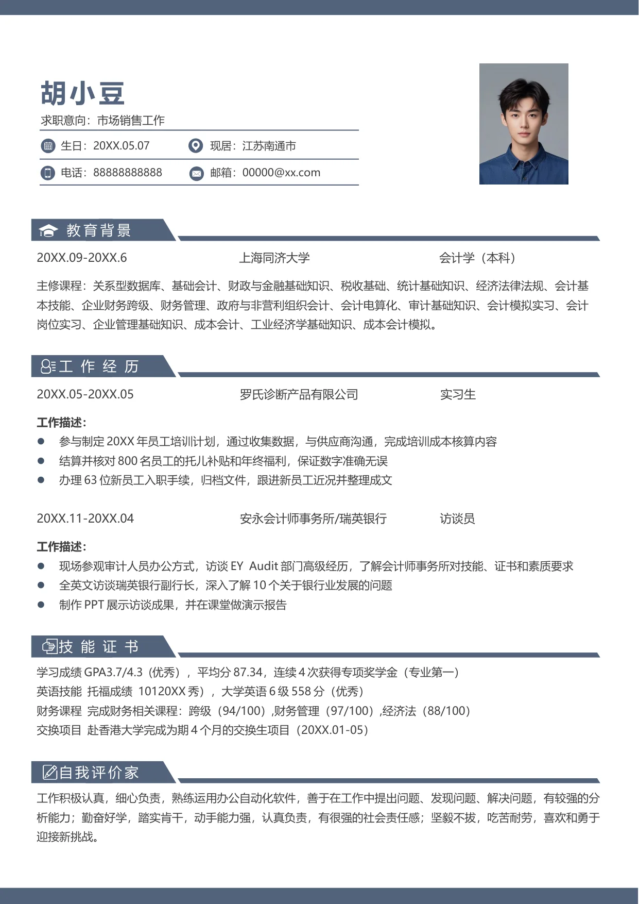

20XX.09-20XX.6 上海同济大学 会计学（本科）
主修课程：关系型数据库、基础会计、财政与金融基础知识、税收基础、统计基础知识、经济法律法规、会计基
本技能、企业财务跨级、财务管理、政府与非营利组织会计、会计电算化、审计基础知识、会计模拟实习、会计
岗位实习、企业管理基础知识、成本会计、工业经济学基础知识、成本会计模拟。
20XX.05-20XX.05 罗氏诊断产品有限公司 实习生
工作描述：
•
参与制定20XX 年员工培训计划，通过收集数据，与供应商沟通，完成培训成本核算内容
•
结算并核对800 名员工的托儿补贴和年终福利，保证数字准确无误
•
办理63 位新员工入职手续，归档文件，跟进新员工近况并整理成文
20XX.11-20XX.04 安永会计师事务所/瑞英银行 访谈员
工作描述：
•
现场参观审计人员办公方式，访谈EY Audit 部门高级经历，了解会计师事务所对技能、证书和素质要求
•
全英文访谈瑞英银行副行长，深入了解10 个关于银行业发展的问题
•
制作PPT 展示访谈成果，并在课堂做演示报告
胡小豆
求职意向：市场销售工作
工作经历
学习成绩GPA3.7/4.3 (优秀），平均分87.34，连续4 次获得专项奖学金（专业第一）
英语技能 托福成绩 10120XX 秀），大学英语6 级558 分（优秀）
财务课程 完成财务相关课程：跨级（94/100）,财务管理（97/100）,经济法（88/100）
交换项目 赴香港大学完成为期4 个月的交换生项目（20XX.01-05）
工作积极认真，细心负责，熟练运用办公自动化软件，善于在工作中提出问题、发现问题、解决问题，有较强的分
析能力；勤奋好学，踏实肯干，动手能力强，认真负责，有很强的社会责任感；坚毅不拔，吃苦耐劳，喜欢和勇于
迎接新挑战。
自我评价家
现居：江苏南通市
邮箱：00000@xx.com
技能证书
生日：20XX.05.07
电话：88888888888
教育背景